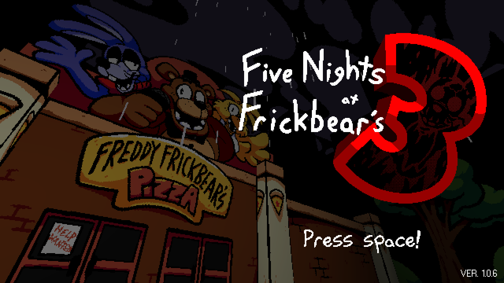
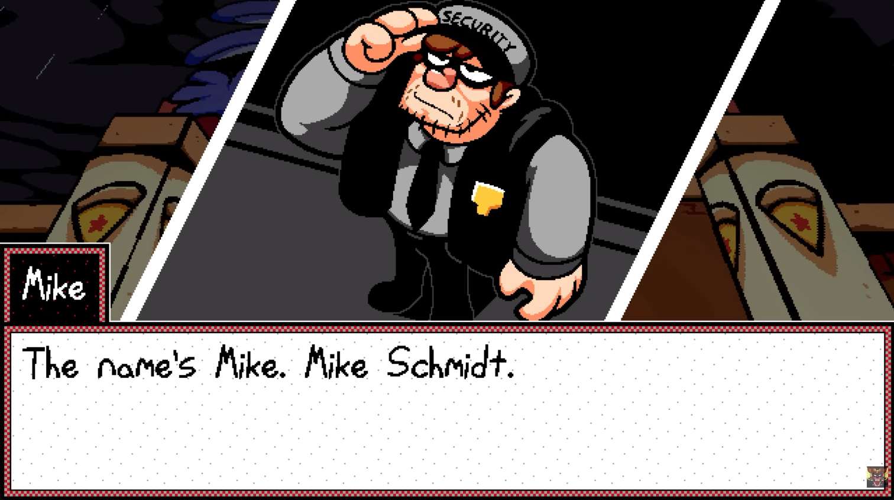
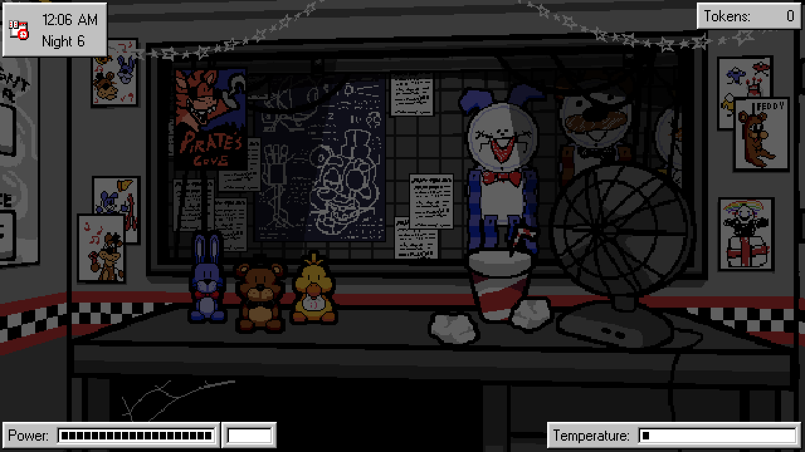
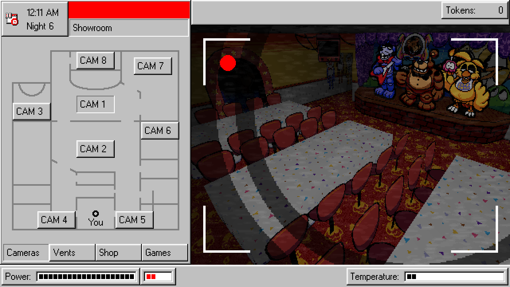
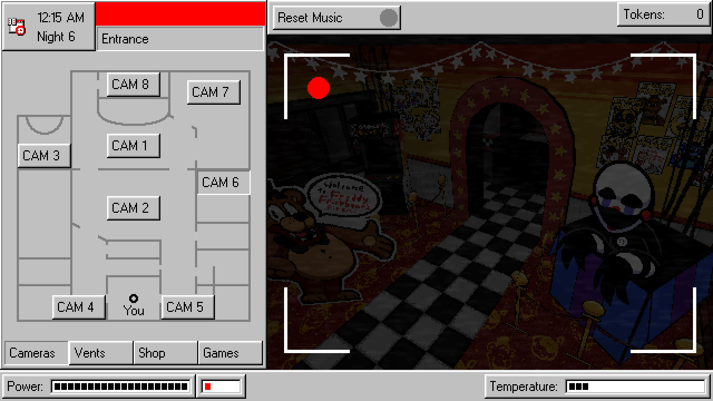
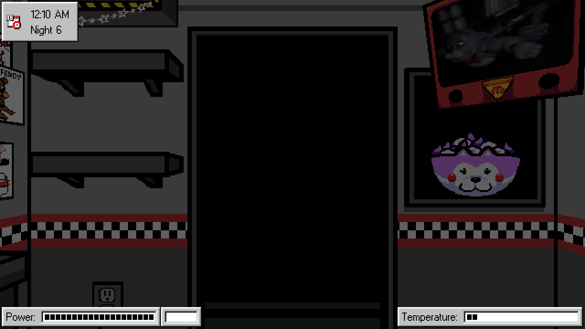

Informações Gerais
"Five Nights at Frickbears 3", ou só "Frickbears 3" é uma fangame feita por SpookyRick, que traz um tom cômico à franquia de Five Nights at Freddy's, junto de um estilo de arte cartoonesco em pixel art.
No jogo, você trabalha na Freddy Frickbear's Pizza como um guarda de segurança, seguindo a gameplay clássica de um jogo de FNAF. Olhe as câmeras, feche as portas se necessário e sobreviva até as 6 da manhã. Porém, entre as noites de gameplay, você visita outras localizações em busca de outros animatrônicos para a sua pizzaria, trazendo um aspecto roguelike para o jogo. Dependendo do guarda que você escolheu no início do jogo, você terá que levar mais animatrônicos para a sua pizzaria, fazendo com que a sua gameplay fique mais difícil.
| Guarda | Dificuldade | # de anim. |
|---|---|---|
| Jeremy | Fácil | 1 |
| Mike | Normal | 2 |
| Vanessa | Difícil | 3 |
| Fritz | Lunático | 4 |
Dependendo do que você fez nas outras localizações, entre as noites também podem ocorrer algumas cutscenes com outros personagens do jogo, geralmente indicando que você está indo para um final específico do jogo. Se você conseguir completar dois ou mais requisitos para certos finais, pode até acontecer uma cutscene diferente!
- O Chefe: Final da Grana
- Vanny: Final Maligno
- Michael: Final Bom
- P. F. Fredbear: NPC de Tutorial
Personagens não-jogáveis
Galeria





